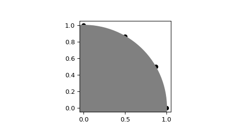
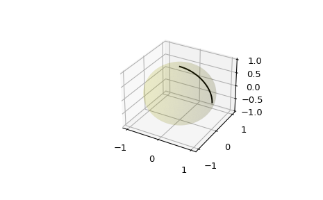

scipy.spatial.geometric_slerp¶
-
scipy.spatial.geometric_slerp(start, end, t, tol=1e-07)[source]¶ Geometric spherical linear interpolation.
The interpolation occurs along a unit-radius great circle arc in arbitrary dimensional space.
- Parameters
- start(n_dimensions, ) array-like
Single n-dimensional input coordinate in a 1-D array-like object. n must be greater than 1.
- end(n_dimensions, ) array-like
Single n-dimensional input coordinate in a 1-D array-like object. n must be greater than 1.
- t: float or (n_points,) array-like
A float or array-like of doubles representing interpolation parameters, with values required in the inclusive interval between 0 and 1. A common approach is to generate the array with
np.linspace(0, 1, n_pts)for linearly spaced points. Ascending, descending, and scrambled orders are permitted.- tol: float
The absolute tolerance for determining if the start and end coordinates are antipodes.
- Returns
- result(t.size, D)
An array of doubles containing the interpolated spherical path and including start and end when 0 and 1 t are used. The interpolated values should correspond to the same sort order provided in the t array. The result may be 1-dimensional if
tis a float.
- Raises
- ValueError
If
startandendare antipodes, not on the unit n-sphere, or for a variety of degenerate conditions.
See also
scipy.spatial.transform.Slerp3-D Slerp that works with quaternions
Notes
The implementation is based on the mathematical formula provided in [1], and the first known presentation of this algorithm, derived from study of 4-D geometry, is credited to Glenn Davis in a footnote of the original quaternion Slerp publication by Ken Shoemake [2].
New in version 1.5.0.
References
- 1
- 2
Ken Shoemake (1985) Animating rotation with quaternion curves. ACM SIGGRAPH Computer Graphics, 19(3): 245-254.
Examples
Interpolate four linearly-spaced values on the circumference of a circle spanning 90 degrees:
>>> from scipy.spatial import geometric_slerp >>> import matplotlib.pyplot as plt >>> fig = plt.figure() >>> ax = fig.add_subplot(111) >>> start = np.array([1, 0]) >>> end = np.array([0, 1]) >>> t_vals = np.linspace(0, 1, 4) >>> result = geometric_slerp(start, ... end, ... t_vals)
The interpolated results should be at 30 degree intervals recognizable on the unit circle:
>>> ax.scatter(result[...,0], result[...,1], c='k') >>> circle = plt.Circle((0, 0), 1, color='grey') >>> ax.add_artist(circle) >>> ax.set_aspect('equal') >>> plt.show()
Attempting to interpolate between antipodes on a circle is ambiguous because there are two possible paths, and on a sphere there are infinite possible paths on the geodesic surface. Nonetheless, one of the ambiguous paths is returned along with a warning:
>>> opposite_pole = np.array([-1, 0]) >>> with np.testing.suppress_warnings() as sup: ... sup.filter(UserWarning) ... geometric_slerp(start, ... opposite_pole, ... t_vals) array([[ 1.00000000e+00, 0.00000000e+00], [ 5.00000000e-01, 8.66025404e-01], [-5.00000000e-01, 8.66025404e-01], [-1.00000000e+00, 1.22464680e-16]])
Extend the original example to a sphere and plot interpolation points in 3D:
>>> from mpl_toolkits.mplot3d import proj3d >>> fig = plt.figure() >>> ax = fig.add_subplot(111, projection='3d')
Plot the unit sphere for reference (optional):
>>> u = np.linspace(0, 2 * np.pi, 100) >>> v = np.linspace(0, np.pi, 100) >>> x = np.outer(np.cos(u), np.sin(v)) >>> y = np.outer(np.sin(u), np.sin(v)) >>> z = np.outer(np.ones(np.size(u)), np.cos(v)) >>> ax.plot_surface(x, y, z, color='y', alpha=0.1)
Interpolating over a larger number of points may provide the appearance of a smooth curve on the surface of the sphere, which is also useful for discretized integration calculations on a sphere surface:
>>> start = np.array([1, 0, 0]) >>> end = np.array([0, 0, 1]) >>> t_vals = np.linspace(0, 1, 200) >>> result = geometric_slerp(start, ... end, ... t_vals) >>> ax.plot(result[...,0], ... result[...,1], ... result[...,2], ... c='k') >>> plt.show()
